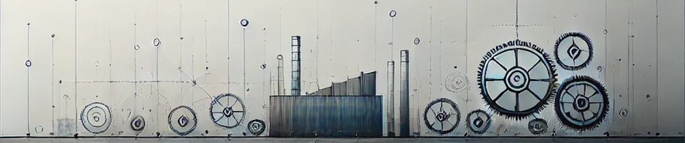

Con un enfoque personalizado y soluciones innovadoras,
ayudamos a tu empresa a alcanzar su máximo potencial.

Diagnóstico 360° y Análisis Integral
Un diagnóstico 360 grados es una herramienta integral que permite evaluar de manera exhaustiva todas las áreas de una empresa, proporcionando una visión completa y detallada del rendimiento y funcionamiento de cada departamento. Este tipo de análisis fomenta la autoevaluación y la crítica constructiva. Además, facilita la detección de oportunidades de mejora para luego poder aplicar diferentes herramientas aplicadas a fin de resolver de manera mas directa y efectiva las oportunidades de mejoras previamente vistas.
Implementación de 5 ‘S’ - con un minimo de 6 meses
La implementación de la herramienta 5 'S' en una empresa es crucial para mejorar la eficiencia y la organización. A corto plazo, se obtienen beneficios como un entorno de trabajo más limpio y ordenado, lo cual reduce el tiempo perdido buscando herramientas y materiales. A mediano plazo, se mejora el flujo de trabajo y se optimizan los procesos, lo que incrementa la productividad y la satisfacción de los empleados. A largo plazo, la práctica constante de las 5 'S' fomenta una cultura de mejora continua que puede conducir a una mayor competitividad y sostenibilidad de la empresa en el mercado.
Análisis y mejora del lay Out de planta
Un layout de planta efectivo maximiza la eficiencia operativa al optimizar la disposición física de equipos, materiales y flujos de trabajo. Esto permite reducir tiempos de producción, minimizar costos de transporte interno, mejorar la seguridad laboral y aumentar la capacidad de respuesta ante cambios en la demanda. Además, facilita una mejor organización y utilización del espacio disponible, lo que se en una gestión más eficiente del inventario y un mejor control de calidad. Un buen layout contribuye significativamente al rendimiento global de la empresa y a la satisfacción del cliente.
Estudio de Métodos y Tiempos
El estudio de métodos se refiere a la investigación y el registro sistemáticos de formas alternativas existentes y posibles de realizar el trabajo o un paso del trabajo para identificar la mejor manera posible. El estudio de tiempos es un método probado y comprobado de medición del trabajo para establecer el tiempo básico y, por tanto, los tiempos estándar para la realización de un trabajo determinado.
Gestión de Mantenimiento
La implementación de una gestión de mantenimiento empresarial integral permite mejorar la eficiencia operativa, reducir costos y prolongar la vida útil de los equipos. Con una planificación adecuada, se pueden anticipar y prevenir fallos, minimizar tiempos de inactividad y optimizar los recursos disponibles. Además, una gestión efectiva fomenta un ambiente de trabajo más seguro y productivo, asegura la continuidad del negocio y mejora la satisfacción del cliente al garantizar la fiabilidad y calidad de los servicios y productos ofrecidos.